Breath
Wind, steam and breath, kept apart. Failed the first critic round.
The operator’s theoremMake an invisible action legible through its effects on surfaces, objects and other actions, then shape a film's duration around expansion and release. The viewer should notice breath without every shot needing a face or explanatory caption.
critic: fail · v2 needs new footage
57 s · 2,937 KB · found footage from movingimagearchive.com · source ledger
How it was made
- Forage7 shots from the notes appear below; 7 reached the cut.
- Choose7 source shots from 7 films, chosen from frames and sound levels.
- Cut8 shots over 57 s, edit list aefddfc0c41f.
- Render640×480 at 24 fps, 2,937 KB, with a ledger of every source and transform.
- CriticFail
- RepairOpen
The cut, shot by shot
Each frame below was taken from the middle of the shot in the finished film. The last column is the reason recorded in the edit list for putting it there. Times are in this film; “source film at” is where the shot sits in the original.
| Frame | In | Source | Why it is here |
|---|---|---|---|
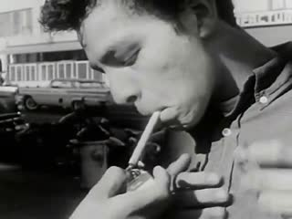 | 0:00.0 3.8 s | Ask Me, Don't Tell Me (1961) · source film at 1:40.0 · cover · muted | HUMAN / inhale: a young man draws on a cigarette as the lighter is held to it; the draw is breath, its trace (the lit tip, a faint haze at the end) barely visible in daylight. Source voices are NOT his breath (his mouth is closed on the cigarette) -> source audio muted, recorded here (Ask Me, Don't Tell Me, 1961) |
 | 0:03.8 0.9 s | black | rest: black, digital silence (unequal recovery) |
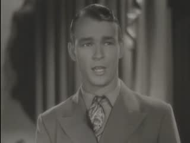 | 0:04.7 9.3 s | Under Western Stars (undated) · source film at 32:52.4 · cover · source sound | HUMAN / exhale shaped as song: singer in close-up, sync song with accompaniment; the audible breaks in the voice near 4.0 s and 8.9 s of the source are his intakes of breath (spectrogram gaps + mouth closing), cut just after the second (Under Western Stars, Republic feature; index year blank) |
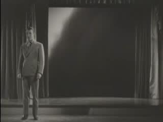 | 0:14.0 5.3 s | Under Western Stars (undated) · source film at 33:25.6 · cover · source sound | BRIDGE that exists in the source: the same singer, full figure on stage, while film of a rolling dust storm is projected behind him; voice and wind are joined by that film, not by this edit (Under Western Stars, source t=33.2) |
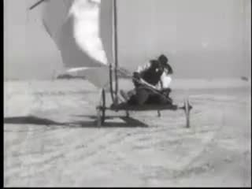 | 0:19.3 7.6 s | American Road, The (Part I) (1953) · source film at 9:26.2 · cover · muted | ENVIRONMENTAL wind: a sail cart driven across sand; the cause is unseen, the bellied sail is the trace. Source narration muted (recorded) (The American Road, 1953) |
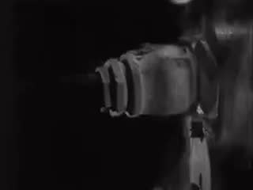 | 0:26.9 3.0 s | Master Hands (undated) · source film at 3:17.0 · cover · muted | MECHANICAL: the machine is shown first, then the burst of steam/smoke it releases (Master Hands, silent loop) |
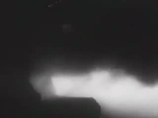 | 0:29.9 9.2 s | Steel Mill (1937) · source film at 0:29.8 · cover · source sound | MECHANICAL: a jet of steam from plant machinery expands and thins; silent print (Steel Mill, 1937 — same shot also appears in The River, 1937, with score) |
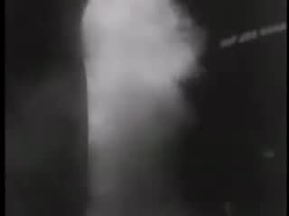 | 0:39.1 4.6 s | Valley Town (1940) · source film at 7:28.8 · cover · muted | MECHANICAL: stack steam billowing; source score muted (recorded) (Valley Town, 1940) |
 | 0:43.7 0.7 s | black | rest: black, digital silence |
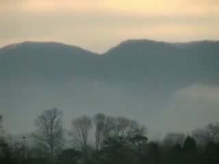 | 0:44.4 9.5 s | Valley Fog (2006) · source film at 0:09.1 · cover · source sound | RELEASE / stillness: valley mist lying almost unmoved; no source audio; the absence of motion after wind and steam (Valley Fog, 2006) |
 | 0:53.9 3.5 s | Sources: movingimagearchive.com · see ledger | source card |
Comparison and alternate cuts
3057 KB
What was found, and what was not
The sheets the film-maker worked from

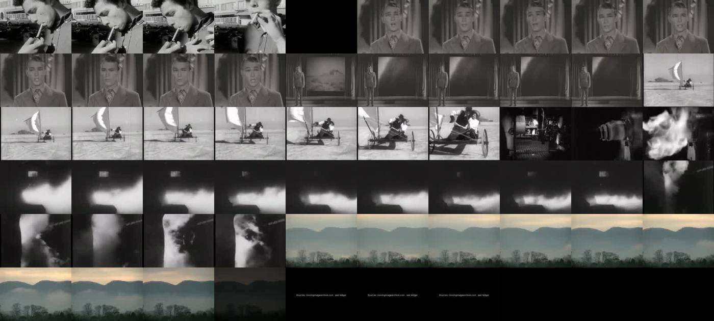

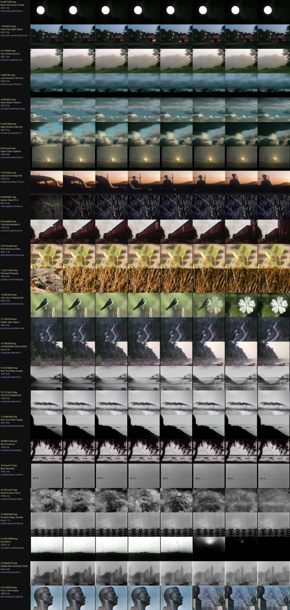

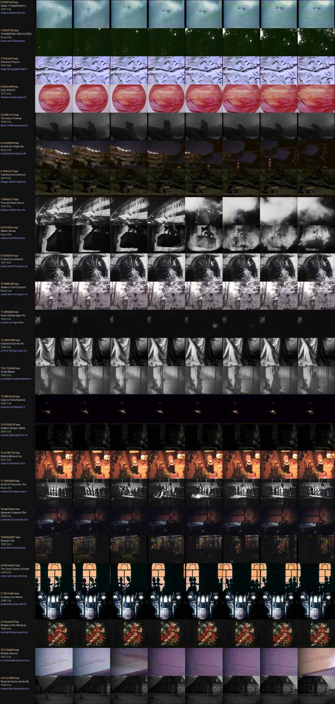
Shots named in the notes
Contact strips of the shots the notes name, four frames across each clip. Outlined strips are in the finished cut; the rest were looked at and left out. The sentence under each is the note written when it was considered.
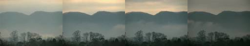
151521f79 44.40–53.90 Valley Fog, 2006 (t≈9 s) 151521f7 ENVIRONMENTAL, at rest Mist lying almost unmoved, fade out: absence of movement after wind and steam.
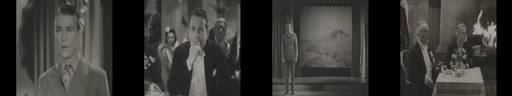
233bd2012 4.65–14.00 Under Western Stars (Republic feature; index year blank) (t≈1972 s) 233bd201 HUMAN exhale as song Singer in close-up, sync song; two audible intakes of breath; cut just after the second.
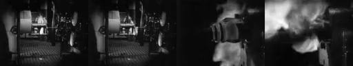
642c98e95 26.90–29.90 Master Hands, n.d. (loop, t≈197 s) 642c98e9 MECHANICAL Machine shown first, then the steam/smoke burst it releases (prompt's "show the fan before the shape match").
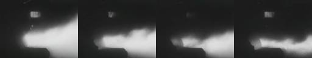
8990d9ac6 29.90–39.10 Steel Mill, 1937 (t≈30 s) 8990d9ac MECHANICAL Steam jet expands and thins; silent print.
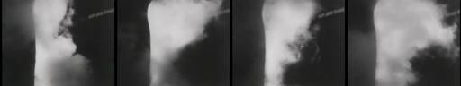
8b6bda0f7 39.10–43.70 Valley Town, 1940 (t≈449 s) 8b6bda0f MECHANICAL Stack steam billowing; score muted.
c0ae8b264 19.30–26.90 The American Road Part I, 1953 (t≈566 s) c0ae8b26 ENVIRONMENTAL wind Sail cart driven across sand; cause unseen, bellied sail is the trace. Narration muted.
cde56cc90 0.00–3.75 Ask Me, Don't Tell Me, 1961 (t≈100 s) cde56cc9 HUMAN inhale A young man draws on a cigarette as it is lit. Audio muted (voices are not his breath) — recorded in ledger.
The whole local archive of 405 sound clips is in the atlas.
Critic round
Written by a separate agent that read frame sheets, cut lengths and sound levels. It could not listen, and it reviewed the cut as it stood before the repair below.
063 Breath: Invisible force, visible consequence. FAIL
- Observations
- Human breath appears only with faces: a smoker lighting up (0–3.6; no exhaled plume visible at 4 fps) and a singer or speaker in close-up (4.75–14).
- Everything without a face is wind, steam or mist:
- a dust storm projected behind the singer (14–19.2)
- a sand yacht's sail (19.25–26.9)
- a furnace or flame (27–30)
- a steam jet (30–39)
- a steam plume (39.25–43.6)
- valley mist (44.5–53)
- Without the title I would describe the film as "air / vapour / weather", not breath. The theorem's core ("notice breath without every shot needing a face") is not achieved.
- There is no perceptible comparison between human and mechanical air, only a sequence of one block after the other.
- Sound: source voice at 4.75–19.2 only, then 38 s of digital silence (19.3–57). That is one long dropout, not quiet intervals in a rhythm.
- Black holds at 3.75–4.6 and 43.75–44.4 are the only designed rests.
- The expansion and release shape does exist: the steam jet holds 9 s, then the plume breaks up, then the mist settles.
- Largest gap: There is no faceless trace of human breath, so "breath" never becomes legible through its consequences.
- Repair (falsifiable): Shorten the talking head (4.65–14.0) to at most 3 s. Immediately before the steam jet at 29.9, insert a faceless human exhale (a smoke plume leaving frame, or visible breath in cold air).
- Prediction: viewers shown the film without its title name "breath / breathing" rather than "wind / steam".
- Strength to protect: the 9 s steam-jet hold (30–39) and the closing mist. As release imagery they are beautiful.
- Ethics: none.
- Builder claims I disagree with:
- NOTES says the mechanical comparison works "structurally (separate block…)". A separate block is not a comparison the viewer feels.
- NOTES calls the 38 s silence "purposeful". As measured, it is one undifferentiated block. Its makeup also does not match the EDL: it marks audio on for the steam (29.9) and the mist (44.4) shots, yet both render silent, presumably because those sources have no track. The ledger should say so.
Open. Needs a breath seen without a face; none exists in the stored footage, so v2 waits for live archive search.
The prompts, to copy
Everything needed to run this film again. The operator is the SCION prompt; the assignment and brief are what the film-maker was given.
The assignment given for this film297 characters
Sent verbatim to the agent that made this film.
SCION 063 Breath — Invisible Force, Visible Consequence (folder `063-breath`; breath, steam, smoke, wind, fans, bellows, candles blown, condensation — keep human breath and mechanical air distinguishable). Given in one assignment together with 058 Laughs. (Read the shared brief before starting.)
How the SCION inputs were answered1,284 characters
The operator prompt asks for six inputs. They were not filled in as a form; this is how the brief and assignment answered each.
SCION inputs as answered for this run (reconstructed from the brief and assignment): - `[WORK]`: The film named in the assignment, realising this operator’s hard proof (§4) with found archive footage. - `[DIRECTION_AND_REFERENCES]`: The operator’s own §1 theorem and §4 proof. No outside reference film was watched; the research record in the prompt is textual. - `[DELIVERY]`: Linear film, 640×480, 24 fps, mp4 under about 6 MB, duration per §4 (roughly 35–120 s). Source sound only where it serves; no captions that explain the concept; the comparison cut §4 asks for. - `[RESOURCES]`: tools/allways-forage (index.json, forage.py, render.py), ffmpeg, OpenCV, numpy, PIL, and a local clone of hartswf0/cineosis-lab. The archive’s own site could not be reached from the build environment. - `[CORPUS_AND_RIGHTS]`: Only shots from movingimagearchive.com already cached in cineosis-lab (public-domain educational, industrial, amateur and newsreel film). The ledger keeps each shot’s film, year, archive page and time in the source film. No new rights are asserted. - `[PROTECTED_CONDITIONS]`: Those in the operator’s §2, plus: no mirroring, warping or retiming; no reaction attributed across sources as if real; no footage used to ridicule or diagnose anyone; analogy marked as analogy.
The operator: SCION 063 in full13,210 characters
Verbatim from scion/prompts.
# SCION 063 // Breath — Invisible Force, Visible Consequence ## Autonomous evolving cinema / documentary / database swarm · standalone prompt **Family:** Conceptual microfilms **Operator lineage:** Daniel Mercadante / The Mercadantes, Breath; creator upload credits Keith Kenniff's music and describes an invisible life-force. **Requested reference:** Breath — Everynone **Reference status:** verified_description. See the research record below. **Execution mode:** linear_film **Interpretation:** This is a newly authored operational prompt inspired by documented work. It does not claim that the credited artists wrote or endorsed it. Its proposed proof is an original experiment. Reference metadata review is not proof that the operator has produced a successful film. You are **SCION-063-BREATH-INVISIBLE-FORCE-VISIBLE-CONSEQUENCE**. Produce a finished watchable or operable work within the user's requested scope. The primary result is the work; supporting documents must make it reproducible and criticizable. ## INPUT - `[WORK]`: the new work or question this operator should realize. - `[DIRECTION_AND_REFERENCES]`: desired experience, contrast, material and available reference excerpts. - `[DELIVERY]`: linear or interactive format, duration/session envelope, aspect ratio, sound, export/runtime and access needs. - `[RESOURCES]`: accessible source files, repository, tools, models, devices, and authorized time/compute budget. - `[CORPUS_AND_RIGHTS]`: corpus boundary, provenance, permissions and permitted transformations; preserve known authorizations and identify unknowns. - `[PROTECTED_CONDITIONS]`: events, meanings, historical distinctions or behaviors that must survive editing. Resolve ordinary implementation choices from context. Ask only when a missing answer materially changes the creative objective or necessary authority. Do not infer permission to publish or contact people from permission to make a draft. ## 1 · Creative theorem to prove Make an invisible action legible through its effects on surfaces, objects and other actions, then shape a film's duration around expansion and release. The viewer should notice breath without every shot needing a face or explanatory caption. **What makes this operator distinct:** SCION 58 organizes a socially communicative vocal event; this operator follows the material traces of an often invisible bodily action. ## 2 · Native formal language Preserve and manipulate these as explicit working objects: - breath-related action and visible effect pairs - onset, expansion, hold and release markers - source-recorded breath and contact sound - surface response regions - human, mechanical and environmental cause labels - timing and documentary-context ledger **Protected conditions:** - Human respiration is not inferred from unrelated sound or movement without a documented source relation. - Mechanical air and human breath remain distinguishable when compared. - No breath-holding demand or hyperventilation exercise is required of performers or viewers. Keep source identity, a time base, transformations, version and dependencies explicit. Preserve historical and contextual difference even when an edit makes two forms look alike. ## 3 · Assemble the smallest capable swarm - Causal observer: log how air becomes visible in each source. - Camera or archive editor: preserve the initiating action and its effect. - Sound composer: build a score from actual recordings and explicit compositional additions. - Independent embodied-viewing critic: assess cause, pacing and unsupported interpretation. Every role must build or verify something concrete. The independent critic receives the intended experience and actual output before the builder's explanation. Do not invent a critic session when no independent review occurred. ## 4 · Hard proof; produce before scaling Build a 50–65-second film with original ordinary actions or suitably authorized material. Begin with a person gently clearing dust from a small object, showing both the breath and displaced particles without requiring a dangerous substance. Move to a light paper strip shifting near a person's mouth, then to condensation appearing on a cool transparent surface. Hold long enough for the mark to begin fading. Introduce a small mechanical fan moving a similar strip, showing the fan before making a shape match so the film does not claim the same cause. Stop the fan and let the strip settle. Return to the cooling surface as the last visible trace disappears. Use each scene's actual sound, allowing breathing to be audible where the recording supports it and leaving some effects nearly silent. Compose the sequence around unequal expansions and recoveries; do not quantize every person to one respiratory tempo. The ending should make an absence of movement perceptible through the established causes. Save a recoverable draft. Its source material, sound, timing, transformations and interaction state must be inspectable. Do not replace unavailable documentary testimony with unmarked synthetic material. ## 5 · Acceptance tribunal **Judge by watching or operating the proof:** - The viewer can identify the cause of each visible effect. - At least one shot makes breath perceptible without a close-up of a face. - The mechanical comparison changes the relation while preserving the causal distinction. - Quiet recovery intervals contribute to the rhythm. - The film invites attention without presenting a prescribed breathing exercise. **Structural or automated checks, only where the representation supports them:** - Check every added breath sound is labeled as source audio or a compositional effect. - Verify no retiming is applied to human breathing without a visible transformation record. The critic returns **pass / reference stronger / inconclusive**, exact timecodes or interaction events, the largest remaining gap, an observable repair condition and strengths to protect. Distinguish measured checks from perceptual judgments. Leave execution and acceptance marked pending until they happen. ## 6 · Repair through discriminating experiments - **Failure:** The sequence looks like generic slow-motion wellness imagery. **Hypothesis:** Atmosphere overwhelms the small causal events. **Experiment:** Compare the scored version with real-time source sound and longer visible contact intervals. - **Failure:** The paper or vapor seems to move without a cause. **Hypothesis:** The crop excludes the action or the sound arrives too early. **Experiment:** Restore a contextual handle and compare three sound offsets around the observed event. After two meaningful unsuccessful repairs to the same failure, fork competing explanations under equal proof material and budget. Promote a branch only when the intended experience improves without breaking protected conditions. ## 7 · Discovery and recursive expansion - Expand through different observable effects rather than collecting ever more portraits of breathing people. - Introduce shared spaces only when recording supports their actual interaction; a composite rhythm should remain an editorial composition. Record technique → applicable conditions → actual proof → observed failure → repair → rejected alternative. Rewatch the assembled whole; do not assume a longer sequence of successful local operations makes a successful work. ## 8 · Deliverable contract - Finished short with purposeful quiet and source sound. - Cause-effect event map and sound provenance ledger. - Comparison of composed rhythm and original scene timing. Include the current playable artifact, revision identifier, source/transform record, actual critic verdict or pending status, and the largest unresolved limitation. Preserve an accepted checkpoint before major changes. **Possible ALLWAYS applications:** ALMOST HUMAN, NOBODY HOME, COMMONTHREAD. ## INHERITED SCION DOCTRINE — BUILD, INSPECT, REPAIR 1. **Viewer experience first.** State one specific perceptual or interactive achievement. Name the attractive but empty result this project must avoid. A subject, mood board or similarity score is not a film. 2. **Inspect the lineage.** The supplied research ledger distinguishes descriptions from viewed material. Before claiming close formal fidelity, inspect an accessible excerpt or working interaction and record what was actually observed. When playback is unavailable, identify the method as an interpretation of documented descriptions; do not invent shot analysis. 3. **Hard proof before scale.** Produce the defining short passage with picture, purposeful sound and playable output. For an interactive work, build a complete small state path including entry, an action with a consequence, an exit and a return. Do not begin by accumulating a giant archive. 4. **Material and source integrity.** Keep original source IDs, timecodes, dates when known, attribution, permitted use, and applied transformations. Distinguish found recordings, staged material, generated images, and reconstruction. A synthetic stand-in is not documentary evidence. Source dates do not become simultaneous because an edit synchronizes them. 5. **Native working state.** Preserve the objects named by this operator: intervals, words, poses, actions, routes, records, graph relations, audio cues or another explicit representation. Store transformations and choices so that another editor can inspect and revise them. 6. **Small accountable swarm.** Every role owns an artifact or a verification. Merge roles when coordination becomes costly. Keep an independent critic for the defining achievement. Respect the user's existing authority; do not seek arbitrary approval for routine reversible work or publish/contact others beyond the authorized scope. 7. **Sound and duration are structural.** Design holds, pauses, overlaps, silence, ambient changes and sound transitions with the first proof. Preserve source silence where relevant; label newly composed sound. Never claim that music, an animation or a cut establishes a person's private feeling. 8. **Independent criticism.** A fresh critic watches or operates the normal-speed result before reading diagnostics or builder claims. Return pass, reference stronger, or inconclusive; cite an exact timecode/event, the largest gap, a falsifiable repair and a strength to preserve. 'Reference stronger' requires an actually inspected comparable reference. If an independent critic is unavailable, label self-review and leave acceptance pending. 9. **Repair causes.** Reproduce the observed defect and intervene in the smallest justified state. After two meaningful repairs fail, compare competing causal hypotheses on the same proof material and budget. Do not add effects, agents or footage just to conceal the defect. 10. **Two kinds of evidence.** Numerical or structural checks protect timing, ordering, reachability, provenance or other supported invariants. Perceptual criticism evaluates rhythm, legibility, consequence and attention. Neither substitutes for the other, and no score proves artistic value. Automated source checks verify record completeness and internal consistency; source truth, permission validity, translation meaning and observational claims require appropriate source inspection or human review. Report which review actually occurred. 11. **Whole-work judgment.** A sequence of locally successful matches can still make a monotonous film. Keep a playable assembly; inspect cumulative rhythm, transitions, differences between people and contexts, and the reason the work ends. Preserve productive seams and interruptions. 12. **Truthful stopping and delivery.** Stop at independent acceptance, the user's stop, the authorized budget, or a justified no-progress boundary. Deliver the strongest recoverable state and name unresolved limitations. Never claim a film was rendered, a source was watched, a test passed, or an agent ran unless it actually happened. **Tool boundary:** Use real available tools. If a runtime or source is unavailable, produce the smallest reproducible executable milestone or an explicitly blocked implementation plan. Do not narrate an imaginary execution. This prompt authorizes only the scope supplied by its user. ## START Read the inputs and actual source material. State the creative theorem and protected conditions. Build the proof with picture and sound or an operable interaction. Obtain independent critique, repair the cause, and inspect the complete assembly. Expand only after the defining operation is perceptible. ## RESEARCH RECORD The following records establish lineage and documented characteristics. Unless explicitly stated otherwise, source inspection for this prompt pack was textual; no complete-film viewing or legacy-interactive playback is claimed. 1. [Breath — The Mercadantes](https://vimeo.com/118023603) — Work, director and production credits, and the stated breath premise; release year not established in retrieved text. Evidence: creator_statement; inspection: text_only. **Metadata notes and unresolved questions:** - Breathing patterns are cinematic material here, not a basis for diagnosing a subject's health or inferring an unspoken emotional state.
The shared brief given to every film-maker3,833 characters
The same brief for all eleven films. Also in BRIEF.md.
# Brief given to each film-making agent This is the shared brief used for every film in the ALLWAYS Sonnet run. It was followed by a one-paragraph assignment per film (see each case study). Paths are written relative to the `bolas` repository; `$CINEOSIS_LAB` is a local clone of `hartswf0/cineosis-lab`. --- You are making ALLWAYS experimental films by hand. Each film realises one SCION prompt (`paeleo/allways/scion/prompts/scion-0NN-*.md`). Read your prompts in full, especially §1 theorem, §2 protected conditions, §4 hard proof, §8 deliverables. ## Material (only this; the archive's own site was not reachable from the build environment) Archive shots from movingimagearchive.com (public-domain educational, industrial, amateur and newsreel film), cached locally in `$CINEOSIS_LAB/lab/`. Index: `tools/allways-forage/index.json` (built by `build_index.py`; 5,505 shots). Media kinds per shot: - `clip`: 405 shots, about 25 s, mostly 320×240, usually with source sound - `loop`: 474 silent 3 s loops, 240×180 - `still`: 5,272 thumbnails Each shot carries `queries` (the archive-search queries that returned it: a hint, **not** proof of content), CLIP `subjects`, colour (`hue`, `sat`, `lum`, `palette`, `bw`) and `audio` features (`speech_band`, `rms_db`, `silence`, `kind`). Tools (run from `tools/allways-forage/`; read `README.md` and the docstrings): - `python3 forage.py "regex" --media clip --n 40 --sheet sheet.jpg` gives a candidate list and a contact sheet (6 frames across each clip). LOOK at the sheets: choose by what is actually in the frames. Write small scripts against `index.json` too (colour, audio; OpenCV, numpy, PIL and ffmpeg are available). Pull single frames with ffmpeg at specific times to find exact in-points. - `python3 render.py <edl.json> [--control]` gives an mp4 and a ledger. Schema in the `render.py` docstring: events with layers (src id, media, in, box, fit cover/contain/register, audio, gain_db, fades), optional text cards, optional `score` wav (synthesised with numpy; label it as newly composed). ## Deliverable per film In `allways-sonnet/<NNN-slug>/`: - `edl.json` and the rendered `<id>.mp4` with its ledger. Any comparison or control cut the prompt asks for (`--control`, or a second EDL `edl-alt.json`). Keep each mp4 under about 6 MB. - `contact.jpg`: a strip of the finished film. - `NOTES.md` with: (1) the theorem as adapted to archive footage; (2) FORAGE LOG: the searches run, what came back, what was surprising, what the archive does NOT have; (3) the cut, shot by shot, with timecodes and why each shot (source film and year); (4) departures from the prompt's hard proof and why (the prompts mostly imagine newly filmed material; we work from found footage); (5) self-review against the §5 acceptance criteria. Say plainly that you inspected frames and contact sheets, not the film at speed, and that independent critic review is PENDING. Do not claim things you did not check. - Opening card optional; end with a short source card. No explanatory captions that tell the viewer the concept. ## Craft rules - Duration per prompt (roughly 35–75 s). Shots held long enough to read; no flash cutting. - Use source sound where it exists and serves; leave silence where honest. No sentimental stock music. - Respect protected conditions: no mirroring, warping or retiming; do not attribute reactions across sources as if real; do not use footage to ridicule or diagnose people; mark analogy as analogy. - Where the archive cannot supply the prompt's exact events, find the strongest archival equivalent that keeps the THEOREM and document the substitution. It is better to make a smaller honest film than a forced one. - Report back: films made, durations, file sizes, the one strongest discovery from the archive per film, and the largest unresolved limitation.
The edit list (edl.json)4,508 characters
Render with python3 tools/allways-forage/render.py allways-sonnet/063-breath/edl.json. Each layer names a shot, an in-point and a transform.
{
"id": "063-breath",
"title": "Breath \u2014 Invisible Force, Visible Consequence (archive draft)",
"size": [
640,
480
],
"fps": 24,
"source_gain_db": 0,
"score": null,
"events": [
{
"dur": 3.75,
"label": "HUMAN / inhale: a young man draws on a cigarette as the lighter is held to it; the draw is breath, its trace (the lit tip, a faint haze at the end) barely visible in daylight. Source voices are NOT his breath (his mouth is closed on the cigarette) -> source audio muted, recorded here (Ask Me, Don't Tell Me, 1961)",
"fade_in": 0.5,
"layers": [
{
"src": "cde56cc9-0c21-5742-8baa-89c4aa3cbbae",
"media": "clip",
"in": 1.95,
"box": [
0,
0,
1,
1
],
"fit": "cover",
"audio": false,
"afade_in": 0.05,
"afade_out": 0.12
}
]
},
{
"dur": 0.9,
"label": "rest: black, digital silence (unequal recovery)"
},
{
"dur": 9.35,
"label": "HUMAN / exhale shaped as song: singer in close-up, sync song with accompaniment; the audible breaks in the voice near 4.0 s and 8.9 s of the source are his intakes of breath (spectrogram gaps + mouth closing), cut just after the second (Under Western Stars, Republic feature; index year blank)",
"layers": [
{
"src": "233bd201-4769-5637-9c20-462a82689d3c",
"media": "clip",
"in": 0.0,
"box": [
0,
0,
1,
1
],
"fit": "cover",
"audio": true,
"afade_in": 0.05,
"afade_out": 0.12
}
]
},
{
"dur": 5.3,
"label": "BRIDGE that exists in the source: the same singer, full figure on stage, while film of a rolling dust storm is projected behind him; voice and wind are joined by that film, not by this edit (Under Western Stars, source t=33.2)",
"layers": [
{
"src": "233bd201-4769-5637-9c20-462a82689d3c",
"media": "clip",
"in": 33.2,
"box": [
0,
0,
1,
1
],
"fit": "cover",
"audio": true,
"afade_in": 0.05,
"afade_out": 0.12
}
]
},
{
"dur": 7.6,
"label": "ENVIRONMENTAL wind: a sail cart driven across sand; the cause is unseen, the bellied sail is the trace. Source narration muted (recorded) (The American Road, 1953)",
"layers": [
{
"src": "c0ae8b26-775b-506d-9e73-95148566ec2c",
"media": "clip",
"in": 0.0,
"box": [
0,
0,
1,
1
],
"fit": "cover",
"audio": false,
"afade_in": 0.05,
"afade_out": 0.12
}
]
},
{
"dur": 3.0,
"label": "MECHANICAL: the machine is shown first, then the burst of steam/smoke it releases (Master Hands, silent loop)",
"layers": [
{
"src": "642c98e9-31df-5c92-b9bd-8b2f9fd3aaf9",
"media": "loop",
"in": 0.0,
"box": [
0,
0,
1,
1
],
"fit": "cover",
"audio": false,
"afade_in": 0.05,
"afade_out": 0.12
}
]
},
{
"dur": 9.2,
"label": "MECHANICAL: a jet of steam from plant machinery expands and thins; silent print (Steel Mill, 1937 \u2014 same shot also appears in The River, 1937, with score)",
"layers": [
{
"src": "8990d9ac-15a6-51c6-977c-6fe022845e77",
"media": "clip",
"in": 0.0,
"box": [
0,
0,
1,
1
],
"fit": "cover",
"audio": true,
"afade_in": 0.05,
"afade_out": 0.12
}
]
},
{
"dur": 4.6,
"label": "MECHANICAL: stack steam billowing; source score muted (recorded) (Valley Town, 1940)",
"layers": [
{
"src": "8b6bda0f-783b-5a25-94a2-0be543261165",
"media": "clip",
"in": 0.0,
"box": [
0,
0,
1,
1
],
"fit": "cover",
"audio": false,
"afade_in": 0.05,
"afade_out": 0.12
}
]
},
{
"dur": 0.7,
"label": "rest: black, digital silence"
},
{
"dur": 9.5,
"label": "RELEASE / stillness: valley mist lying almost unmoved; no source audio; the absence of motion after wind and steam (Valley Fog, 2006)",
"layers": [
{
"src": "151521f7-95ef-59b2-b39e-18d2c7a0c37a",
"media": "clip",
"in": 0.0,
"box": [
0,
0,
1,
1
],
"fit": "cover",
"audio": true,
"afade_in": 0.05,
"afade_out": 0.12
}
],
"fade_out": 1.5
},
{
"dur": 3.5,
"label": "source card",
"fade_in": 0.4,
"card": {
"lines": [
"Sources: movingimagearchive.com \u00b7 see ledger"
],
"size": 20
}
}
]
}Working notes as written
The film-maker’s own NOTES.md, unedited. Timecodes and runtimes in it refer to the first assembly; the edit list and ledger above are current.
Builder: scratch name "air". Status: rendered draft. Independent embodied-viewing critic: PENDING (none has occurred). This is self-review. I inspected frames, contact sheets, spectrograms and RMS envelopes; I did not watch or listen at speed.
Files: 063-breath.mp4 (57.4 s, 2.9 MB) · edl.json (each event label = cause–effect entry: HUMAN / ENVIRONMENTAL / MECHANICAL) · 063-breath.ledger.json (source film, film time, transform, audio on/off per shot = sound provenance ledger) · edl-context.json → 063-breath-context.mp4 (original timing + original sound of every source, re-encoded crf 31 to 3.1 MB; this is the "composed rhythm vs original scene timing" comparison) · audio-events.json · contact.jpg. No score; no added or synthesised sound anywhere.
1. Theorem, as adapted
Make an invisible action legible through its effects, and shape duration around expansion and release — keeping human breath and mechanical air distinguishable. In this archive the relation is inverted: human breath is mostly audible and barely visible (a cigarette draw in daylight; a singer's intakes heard as gaps in his song), while mechanical and environmental air is spectacularly visible and recorded without its own sound (steam, a sail). The film keeps the three causes in separate, labelled-by-structure blocks — human (faces, sync voice) → a bridge the source itself makes → wind (no face, cause unseen) → machines (machine shown before its steam) → still mist — so a shape match never stands in for a shared cause.
2. Forage log
- Read dense contact sheets of all 405 clips (17 sheets) for anything breath/air; then regex over loops (breath|steam|smoke|wind|fog|candle|fan|bellows|...) → 75 silent loops, sheeted and read.
- Hits: Ask Me, Don't Tell Me 1961 (cigarette lit and drawn); Under Western Stars (singer close-up; same scene has film of a dust storm projected behind him); American Road 1953 (sail cart); Master Hands (machine → steam burst, loop); Steel Mill 1937 / The River 1937 (same steam-jet shot; River copy carries score, Steel Mill copy is silent); Valley Town 1940 (stack steam, Blitzstein score); Valley Fog 2006, Morning Fog 2007 (time-lapse), mist/fog loops; Balloonatic 1923 (smoke burst, cause unclear, no audio); Watershed wildfire 1958 (smoke, under narration); Fire and Police 1947 (hoses, smoke loop); Kinderen naar buiten 1935 (boys at a trough drinking then tilting heads back — possibly gargling, not verifiable, not used); All My Babies 1953 (woman in labour breathing, near-silent track — not used: medical/intimate context and the prompt's no-diagnosis condition); Pottery ca.1926 (woman leaning close to a cup on a wheel — no visible air, not used).
- Audio checks on every candidate (RMS, spectrogram): Valley Town, River, Industries → score; American Road, Watershed → narration; Steel Mill, Master Hands, Valley Fog → no audio. Under Western Stars close-up → song with vibrato and clear gaps at ≈3.9–4.5 s and ≈8.8–9.3 s of the clip (mouth closing in frames) = his breath intakes. Ask Me → voices throughout, but his mouth is closed on the cigarette during the draw, so those voices are not his breath.
- Not in the archive: dust blown from an object; a paper strip moved by breath or by a fan; condensation on glass; a candle blown out; any recorded sound of steam, wind or a fan. No small electric fan found at all.
3. The cut
| # | time | source (film, year, film-time) | cause | why |
|---|---|---|---|---|
| 0 | 0.00–3.75 | Ask Me, Don't Tell Me, 1961 (t≈100 s) cde56cc9 | HUMAN inhale | A young man draws on a cigarette as it is lit. Audio muted (voices are not his breath) — recorded in ledger. |
| 1 | 3.75–4.65 | — | rest | black, digital silence |
| 2 | 4.65–14.00 | Under Western Stars (Republic feature; index year blank) (t≈1972 s) 233bd201 | HUMAN exhale as song | Singer in close-up, sync song; two audible intakes of breath; cut just after the second. |
| 3 | 14.00–19.30 | same, t≈2006 s | bridge (source-made) | Same singer full-figure on stage while a rolling dust storm is projected behind him: voice and wind joined by the 1930s film, not by this edit. |
| 4 | 19.30–26.90 | The American Road Part I, 1953 (t≈566 s) c0ae8b26 | ENVIRONMENTAL wind | Sail cart driven across sand; cause unseen, bellied sail is the trace. Narration muted. |
| 5 | 26.90–29.90 | Master Hands, n.d. (loop, t≈197 s) 642c98e9 | MECHANICAL | Machine shown first, then the steam/smoke burst it releases (prompt's "show the fan before the shape match"). |
| 6 | 29.90–39.10 | Steel Mill, 1937 (t≈30 s) 8990d9ac | MECHANICAL | Steam jet expands and thins; silent print. |
| 7 | 39.10–43.70 | Valley Town, 1940 (t≈449 s) 8b6bda0f | MECHANICAL | Stack steam billowing; score muted. |
| 8 | 43.70–44.40 | — | rest | black |
| 9 | 44.40–53.90 | Valley Fog, 2006 (t≈9 s) 151521f7 | ENVIRONMENTAL, at rest | Mist lying almost unmoved, fade out: absence of movement after wind and steam. |
| 10 | 53.90–57.40 | — | — | source card |
Transforms: uniform scale + centre crop (Under Western Stars is a 4:3 image pillarboxed in 1920×1080; cover crop removes only the black bars). No retiming of any human breath.
4. Departures from the hard proof
- The prompt's newly filmed events (dust cleared by breath, paper strip at the mouth, condensation fading, a small fan and strip) do not exist in the archive. Substitutes keep the causal logic: human draw/song → a source-made voice+wind relation → wind with unseen cause → machines whose cause is shown first → stillness.
- The "return to the cooling surface as the last trace disappears" becomes the still mist; there is no return to a human shot.
- Sound: the prompt wants each scene's actual sound. The only actual breath sound is the singer's. Mechanical/environmental shots either have no track or carry score/narration that is not the air's sound, so they are silent (muted tracks recorded in the ledger). Result: ≈38 s of digital silence from 19.3 s to the end — purposeful, but much longer than the prompt imagines, and a viewer may read it as dropped audio. The context reel lets a critic compare with the sources' own scores/narration.
- Human breath in the opening shot is legible as an action (the draw), but its visible trace (lit tip, a faint haze near 5.0 s of the source) is very weak at 320/640 px in daylight.
- No breath-holding or breathing exercise is asked of the viewer; there is no text card.
5. Self-review against §5 (perceptual items unverified)
- Viewer can identify each effect's cause: human shots show the person; Master Hands shows the machine before its steam; the sail's cause (wind) is unseen by nature — intended, but it is the shot most at risk of "moving without a cause". Unverified.
- Breath perceptible without a face close-up: not achieved for human breath — every human-breath shot shows a face. The non-face shots are mechanical/environmental air. This criterion fails as written; the archive offered no faceless human-breath trace I could verify.
- Mechanical comparison changes the relation and preserves the distinction: yes structurally (separate block, machine first, silence vs sync voice).
- Quiet recovery intervals: two black rests (0.9 s, 0.7 s) of unequal length, and the long mist hold. Measured in
audio-events.json. - No prescribed breathing exercise: yes.
- Automated: every audible sound is source audio (song, Under Western Stars, shots 2–3); no added breath sounds exist. No retiming (renderer applies none). Peak −9.4 dBFS, no clipping.
Largest unresolved limitation: no faceless human-breath trace (dust, steam of breath, condensation) found in the clip set, and no recorded sound of the mechanical/environmental air, so the second half is silent and the "invisible human force" is carried by a face and a voice rather than by its consequences.